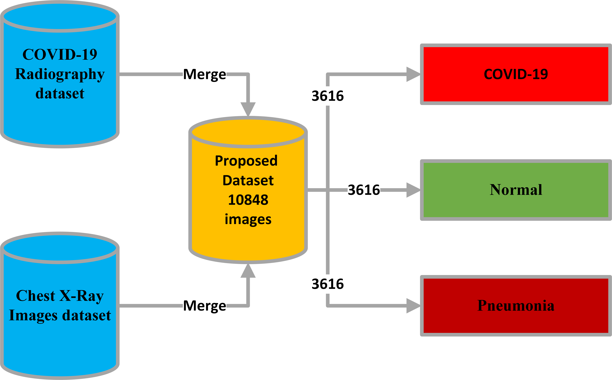
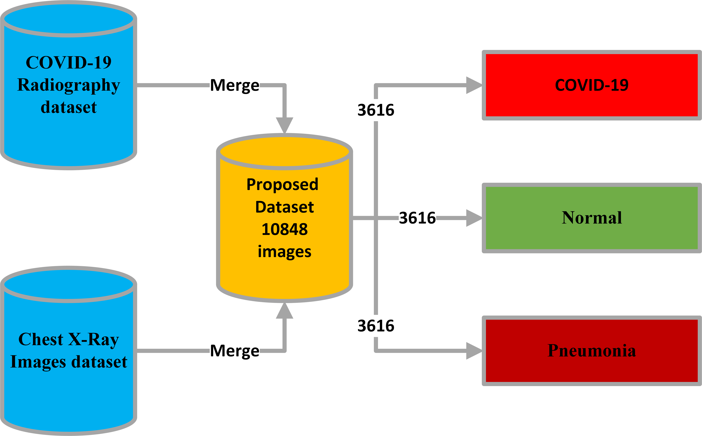
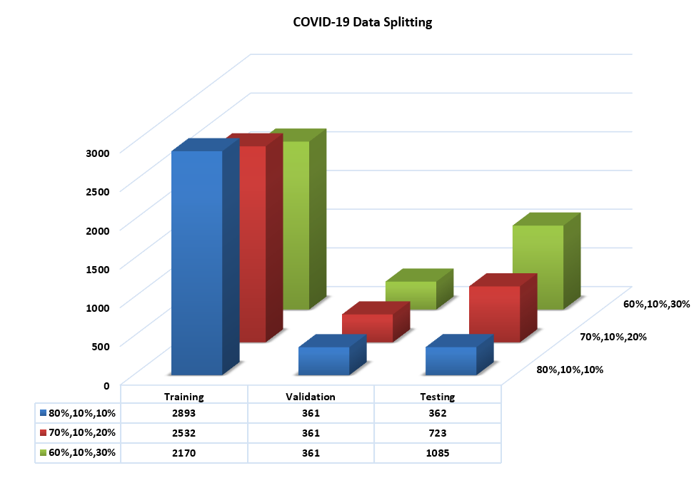
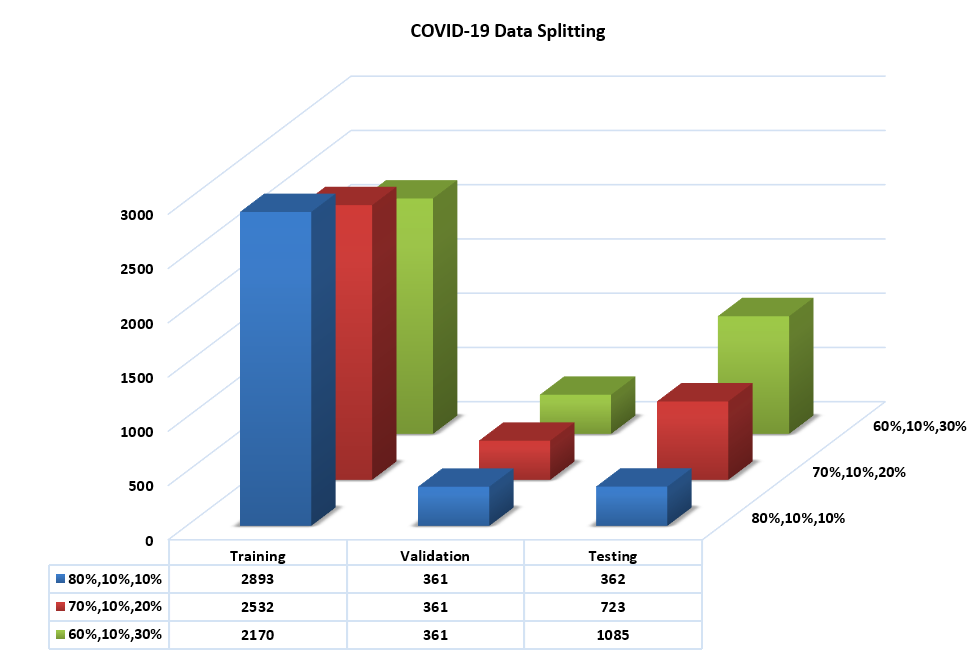

Bayesian-based Optimized Deep Learning Model to Detect COVID-19 Patients Using Chest X-ray Image Data
Abstract
Coronavirus Disease 2019 (COVID-19) is extremely infectious and rapidly spreading around the globe. As a result, rapid and precise identification of COVID-19 patients is critical. Deep Learning has shown promising performance in a variety of domains and emerged as a key technology in Artificial Intelligence. Recent advances in visual recognition are based on image classification and artefacts detection within these images. The purpose of this study is to classify chest X-ray images of COVID-19 artefacts in changed real-world situations. A novel Bayesian optimization-based convolutional neural network (CNN) model is proposed for the recognition of chest X-ray images. The proposed model has two main components. The first one utilizes CNN to extract and learn deep features. The second component is a Bayesian-based optimizer that is used to tune the CNN hyperparameters according to an objective function. The used large-scale and balanced dataset comprises 10848 images (i.e., 3616 COVID-19, 3616 normal cases, and 3616 Pneumonia). In the first ablation investigation, we compared Bayesian optimization to three distinct ablation scenarios. We used convergence charts and accuracy to compare the three scenarios. We noticed that the Bayesian search-derived optimal architecture achieved 96% accuracy. To assist qualitative researchers, address their research questions in a methodologically sound manner, a comparison of research method and theme analysis methods was provided. The suggested model is shown to be more trustworthy and accurate in real world.
 

 


Code
Download Code Here
Reference
Mohamed Loey, Shaker El-Sappagh, Seyedali Mirjalili, Bayesian-based optimized deep learning model to detect COVID-19 patients using chest X-ray image data, Computers in Biology and Medicine, Volume 142, 2022, 105213, ISSN 0010-4825, https://doi.org/10.1016/j.compbiomed.2022.105213